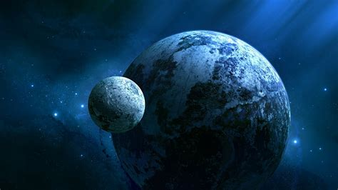

Rubrique scientifique
Le télescope spatial James Webb a été lancé le 25 décembre 2021, un beau cadeau de Noel pour de nombreux scientifiques et amateurs de l’espace. Il observera le cosmos lointain et un peu plus proche à l'aide de plusieurs instruments. Un projet de 30 ans et $10 millions. Quels sont ses instruments et que va-t-il observer avec ?
L’idée d'un nouveau télescope arrive en 1989 où des ingénieurs et des astronomes débattent des capacités scientifiques et techniques d'un observatoire spatial qui succéderait au télescope spatial Hubble. Ce débat a eu lieu à l’atelier Next Generation Space Telescope. Quelques années après, en 1996, une recommandation formelle stipule que le futur télescope devrait fonctionner sur les longueurs d’ondes de l’infrarouge et devra être doté d’un miroir primaire de plus de 4 mètres. 6 ans plus tard, en 2002, la NASA sélectionne les consortium (groupement d’entreprises) qui seront en charge de construire les instruments ainsi que le satellite et 2 ans plus tard la construction du télescope James Webb débute. L’année suivante, en 2005, le lanceur choisi pour le satellite sera Ariane 5 fourni par l’ESA. D’ailleurs l’agence spatiale européenne contribue à deux des quatre instruments scientifiques. En 2011, les 18 segments du miroir primaire du télescope sont assemblés et sont testés. De plus, cette année marque l’année où le satellite est menacé d’abandon à cause de l’explosion de son coût qui est de 6 milliards (Aujourd’hui 10 milliards). 2 ans plus tard, en 2013 débute la construction du bouclier thermique du satellite pour garantir le bon fonctionnement des instruments. Par ailleurs, le bouclier thermique a des dimensions impressionnantes. Il est long de 22 mètres et large de 10 mètres. En raison de sa taille, celui-ci devra être plié dans la coiffe et va se déployer dans l’espace ainsi que le miroir qui a un diamètre de 6,5 mètres. Quelques années plus tard, en 2017, l’assemblage du télescope James Webb avec ses charges utiles et ses servitudes débute et le télescope commence à prendre forme. Enfin, en 2019, le télescope est entièrement assemblé et commence les tests environnementaux, électriques, fonctionnels et de communication. Puis en 2021 le JWST est lancé le 25 décembre à bord de la fusée Ariane 5 et le décollage sera un succès. Par ailleurs, le télescope a pris ses premières photographies en infrarouge.

Schéma du télescope spatial JWST, NASA
Le télescope James Webb est muni de quatre instruments scientifiques à la pointe de la technologie. En effet, ces instruments sont conçus pour observer les objets les plus lointains, des exoplanètes avec une précision inédite, des phénomènes très peu étudiés. Ces instruments vont permettre de faire des avancées majeures dans de nombreux domaines de l'astrophysique et de l'astronomie. De plus, les quatre instruments sont logés à l'intérieur de l’Integrated Science System Module ou ISIM qui abrite aussi de nombreux sous-systèmes. Les instruments MIRI (Mid-Infrared Instrument) et NIRSpec (Near Infrared Spectrograph) sont fournis par l'Europe au titre de sa participation au projet. Le premier instrument est la NIRCam (Near-InfraRed Camera) qui est une caméra grand champ fonctionnant dans la gamme de longueurs d'onde proche infrarouge de 0,6 à 5 µm. Le deuxième instrument est la NIRSpec (Near-InfraRed Spectrometer) qui est un spectromètre multi-objet fonctionnant dans la gamme de longueurs d'onde proche infrarouge de 1 à 5 µm. Le troisième instrument est MIRI (Mid InfraRed Instrument) qui est une caméra et un spectromètre fonctionnant dans la gamme de longueurs d'onde proche infrarouge de 5 à 28 µm. Enfin le quatrième et dernier instrument est le NIRISS (Near Infrared Imager and Slitless Spectrograph) qui est un ensemble de quatreinstruments avec deux spectrographes grand champ avec grisme et objet-unique avec un autre grisme ainsi qu'un interféromètre par masquage non redondant de pupille entre 3,8 et 4,8 microns et un imageur avec filtres à larges bandes passantes entre 1 et 5 microns dans un champ de 2,2' x 2,2'.
Les exoplanètes ou planètes extrasolaires sont des planètes qui ne tournent pas autour du Soleil, et donc sont en dehors de notre système solaire. Elles tournent autour d'une autre étoile. Leur origine date de 1995 où la première planète extrasolaire fût découverte à l'Observatoire de Haute-Provence (Mayor et Queloz). Plus tard, en avril 2005, 155 planètes extrasolaires étaient connues. On détecte des exoplanètes grâce à deux méthodes : la méthode du transit planétaire et la méthode des vitesses radiales. Cependant le télescope James Webb permettra de détecter également des exoplanètes. De plus, on recèle plusieurs catégories d’exoplanètes. Les planètes gazeuses sont plus faciles à voir que les planètes telluriques par leur masse et leur volume important alors que les planètes telluriques ne sont pas les plus nombreuses à avoir été détectées en raison de leur petite taille.
|  |
Vue d'artiste d'une exoplanète, Luciano Mendez |
Il y a différents types d’ exoplanètes gazeuses et d’exoplanètes telluriques. Du côté des exoplanètes gazeuses, il y a les Joviennes qui sont composées majoritairement d’hydrogène et d’hélium. Ce sont des géantes gazeuses qui sont qualifiées de Jupiter chaud ou de Jupiter froid selon leur température de surface. Par ailleurs, certaines sont composées presque exclusivement d’hélium. Comme autre exoplanète gazeuse, il y a les neptuniennes qui sont des géantes de glace et elles sont composées d’eau, de méthane et/ou de l'ammoniac. Néanmoins, on distingue deux types de Neptuniennes selon leur température. Il y a les Neptunes chauds qui sont proches de leur étoile et il y a les Neptunes froids qui sont très éloignées de leur étoile. Du côté des planètes telluriques, il y a les Super-Terres qui ont une masse comprise entre une et dix fois la masse de la Terre. Il y a plusieurs types de Super Terre en fonction de leur composition comme les planètes de silicates, des planètes océans, des planètes de carbone et autres. Il y a également les “soeurs” de la Terre qui sont des planètes habitables se trouvant dans la zone habitable déterminée par la distance et la masse de l’étoile sinon ces planètes n’abriteront aucune vie en étant trop près de l’étoile ou trop loin.
Conception artistique du télescope spatial James Webb (JWST), NASA
En plus de grandement améliorer ce que pouvait observer Hubble, le télescope spatial James Webb est spécialisé dans les infrarouges. Tous ces instruments sont spécialisés dans ce domaine et à la pointe de la technologie. En effet, les chercheurs se sont aperçus, surtout ces dernières années, que le domaine de l’infrarouge est très important et peut apporter beaucoup d’informations précieuses sur des phénomènes encore mal compris comme les trous noirs ou les quasars. Cela va aussi permettre d’observer la lumière des premières étoiles et de remonter le plus loin possible dans le temps jusqu’au premiers instants du Big Bang. De plus, à cause de l’effet Doppler, provoqué par l’extension de l’univers, toute la lumière des premières galaxies, quasars ou astres en général a subi un “Redshift”, c’est à dire, un décalage vers le rouge donc dans le domaine des infrarouges. Les chercheurs espèrent analyser les lumières des premières étoiles et galaxies afin de déterminer, par exemple, leur composition et leur structure atomique ou leur âge. JWST va aussi essayé de nous éclairer sur les quasars. Encore mal compris, ces astres ont été formés il y a très longtemps (il y a plusieurs milliards d'années). Découvert en 1962, ces corps primitifs sont composés d’un trou noir supermassif en leur centre et de nuages de poussières et de gaz.
Mesurant en général quelques fois la taille du système solaire, ils se trouvent en général au centre des galaxies. Le trou noir, en consommant les nuages qui l’entourent, accélère immensément vite (proche de la vitesse de la lumière) la matière du disque d’accrétion avant que celle-ci passe l’horizon des événements et soit avalé par le trou noir. En outre, cette matière rejette des ondes électromagnétiques de très haute fréquence et de très courte longueur d’onde (rayons X ou rayons gamma). Cependant, ces ondes électromagnétiques nous arrivent en lumière visible ou infrarouge (effet Doppler). Tous ces facteurs font des quasars les astres les plus lumineux de l’univers ! Plus lumineux que plusieurs milliers de galaxies, s’il avait la masse du Soleil, sa luminosité serait 40000 fois supérieure à celle de ce dernier. Il faut également prendre en compte que la masse d’unquasar vaut plusieurs centaines de milliards de fois celle de notre Soleil et que la valeur de sa luminosité évolue en fonction ! JWST est le plus grand télescope de tous les temps et va sûrement nous apprendre beaucoup sur tous ces astres et phénomènes si incroyables.
Le fond diffus cosmique et les sursauts gammas sont des rayonnements de haute fréquence, respectivement rayons X et gammas. Ceux-là sont les deux plus hautes fréquences de rayonnement électromagnétique dans l’Univers. Webb va regarder ces deux phénomènes différents. Il utilise l’infrarouge pour les regarder due à leur grande distance à nous (effet Doppler). Le fond diffus cosmique, aussi connu sous le nom de rayonnement fossile a été découvert par accident durant le 20ème siècle. Il s’agit du premier moment observable de l'Univers ; avant, il était opaque. Le rayonnement fossile a donc un peu moins de 13,6 milliards d’années. Il est utile pour étudier la répartition de la matière aux débuts de l’Univers. Les sursauts gamma sont les évènements les plus violents de l’Univers. Ils sont courts ou longs. Les plus longs durent quelques minutes au maximum. Ils sont dus aux fusions d’étoiles à neutrons et de trous noirs. A cause de leur courte durée, ils sont très compliqués à observer. En conséquent, Webb et un réseau entier d’observatoires terrestres et spatiaux pointeront leurs objectifs vers ces phénomènes le plus rapidement possible dès leur détection, délaissant leurs autres observations : c’est ce que l’on appelle une cible de l’opportunité.

Vue d'artiste d'un sursaut gamma, ESO/A. Roquette |
Image aux rayons X des rémanents de la SN 1572 thermonucléaire observés par le télescope spatial Chandra.NASA/CXC/Rutgers/J.Warren & J.Hughes et al. |
Vous pouvez suivre l'actualité du plus grand télescope spatial jamais lancé sur jwst.fr.
Cet article a été rédigé par Alexandre Chateau, Alexandre Jano, Maxime Roulet et Abigael Walmsley